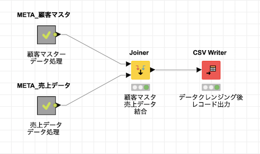
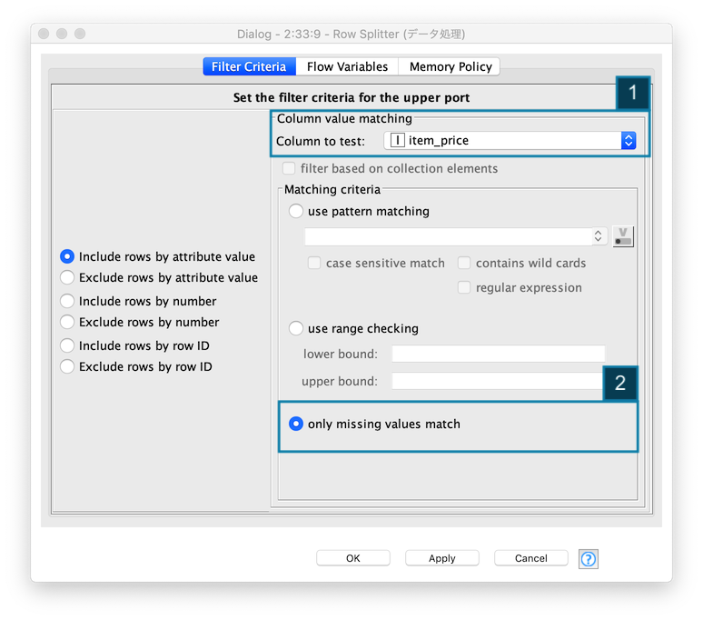

KNIME 入門編 / 前処理
- 作成日: 2020-03-31
- 更新日: 2020-04-11
ビッグデータでは、大量のテキストデータ、数値データを扱います。数値データには、欠損値、異常値などを含む為、そのままデータ分析を進めても期待した結果・効果を得ることができません。データ分析では、データの誤り、漏れ、不足、矛盾を事前にチェックし、データを整える「前処理」という工程が必要とされています。今回は、顧客マスタと売上データの二つのデータの前処理を行います。その結果をCSV形式ファイルに保存し、次回の探索的データ分析 (可視化含む) に進みます。
ワークフロー全体
- 顧客マスタ データ処理
- 売上データ データ処理
- 顧客マスタ, 売上データ結合
- CSV形式ファイル出力
ワークフローは下の図に示した通りです。顧客マスタ と 売上データ の前処理ワークフローを META_顧客マスタ W/F と META_売上データ W/F にそれぞれまとめ、その後、前処理後の二つのテーブルを結合します。最終的に、結合したレコードをCSV形式ファイルとして出力します。
Fig. 全体ワークフロー

META_顧客マスタ と META_売上データ の結合
META_顧客マスタ W/F と META_売上データ W/F の出力 (レコード) を結合します。結合するカラムは、顧客名 です。
Fig. テーブル結合

CSV形式ファイルの出力
最終的に得られたレコードをCSV形式ファイルとして出力します。
- 出力先とファイル名を指定する
- ファイルが既に存在している時、上書きを指定する
Fig. CSV形式ファイル出力

- 利用ノード: IO / Write / CSV Writer
顧客マスタ 前処理
処理概要:
- データ読込み:
顧客マスターExcelファイル 読込み
- 前処理:
氏名スペース除去登録日- データ型統一
- Excel シリアル値 を日付型に変換
- レコードマージ
- データ出力:
- データ処理後
顧客マスターCSV形式ファイル出力 (再利用)
- データ処理後
Fig. 顧客マスタ.前処理ワークフロー

1. 顧客マスター Excelファイル 読込み
KNIMEに 顧客マスターファイル (Excel) を読み込み、レコードを確認します。
- ローカルファイル上にある
顧客マスター Excelファイルを指定する -
Excelファイルの読み込み成功後、データプレビューエリアにレコードが表示される
-
利用ノード: IO / Read / Excel Reader
2-1. 顧客マスター 前処理 / 氏名カラム / スペース除去
顧客マスター.登録日カラムのフォーマットを統一する為、不要なスペース (Whitespace) を除去します。

replace関数を使い" "スペースを除去する-
既存の列, 顧客名を指定し、処理結果を上書きする
-
利用ノード: Manipulation / Column / Convert & Replace / String Manipulation
2-2. 顧客マスター 前処理 / 登録日カラム / 日付フォーマット判定 + レコード分割
登録日 カラムの値が 期待する日付フォーマットと それ以外に分類します。

- 検査対象カラムに
登録日を指定する -
期待する日付フォーマットを 正規表現 -
^(\d{4})/(\d{2})/(\d{2})$を指定する
除外レコード (Filtered Out)
ノードアイコン を選択し、処理メニューの中の Filtered Out を実行することで、除外レコード (期待する日付フォーマット以外) のレコードが表示されます。
Fig. 処理メニュー
Fig. 除外レコード表
登録日 カラムの値が reserved-*x1F となっていて 日付フォーマットでないことが確認できます。

2-3. 顧客マスター 前処理 / 登録日カラム / 文字列置換
「2-1. 顧客マスター 前処理 / 氏名カラム / スペース除去」と同様に String Manipulation ノードを使って、文字列置換を行う - 値から 文字列 reserved- と x1F を除去します。
1 | |
2-4. 顧客マスター 前処理 / 登録日カラム / 文字列から数値へ変換
前のノード - 「2-3. 顧客マスター 前処理 / 登録日カラム / 文字列置換」で 登録日 から不要な文字列を除去し、シリアル値 (文字列) に整形したので、それを数値に変換すます。
2-5. 顧客マスター 前処理 / 登録日カラム / Javaコード - シリアル値からUnix Timestampへ変換
前のノード - 「2-4. 顧客マスター 前処理 / 登録日カラム / 文字列から数値へ変換」で 登録日 のシリアル値を得ることができたので、さらにその値を Unix Timestampに変換します。

- シリアル値からUnix Timestampに変換するJavaコードを記述する
1 2 | |
-
Javaからレコードにアクセス可能にする為、Inputエリアに
登録日カラムを指定し、データ型: Integer, Java Field:c_RegisteredAtとする。また、シリアル値からUnix Timestampに変換した値を登録日カラムに上書きする (Outputエリアで設定する)
2-6. 顧客マスター 前処理 / 登録日カラム / Unix Timestampから日付型へ変換
前のノード - 「2-5. 顧客マスター 前処理 / 登録日カラム / Javaコード - シリアル値からUnix Timestampへ変換」で 登録日 の Unix Timestampの値を得ることができたので、日付型に変換します。

- Includeエリアで
登録日カラムを指定する -
入力列の単位、出力列のデータ型 -
Dateを指定する -
利用ノード: Other / Data Types / Time Series / Transform / UNIX Timestamp to Date&Time
2-7. 顧客マスター 前処理 / レコード結合
登録日 カラムの不正な値を日付型に修正したレコードと、最初から日付型のレコードを結合し、データ分析用のレコードセットを作成する。処理後のレコードは、Concatenated table を実行することで確認することができます。


3. データ処理後 ファイル出力
前処理を完了したレコードをCSV形式で保存しておくことで、再利用することができる。ファイルの保存先を指定し、既に同名称のファイルが存在する時は、上書きするように If file exists...: Overwrite(上書き) を指定します。

- 利用ノード: IO / Write / CSV Writer
売上データ 前処理
処理概要:
- データ読込み:
売上データCSV形式ファイル 読込み
- 前処理:
購買日- RowIDを元に、
購買日列追加 - データ型統一 文字列から日付型へ
購買日を元に、購買年月列追加
- RowIDを元に、
商品名スペース除去 (文字列処理)商品価格- 欠損値処理
- 欠損値存在レコード, 未存在レコード 分割
- 欠損値置換値 算出と置換
- レコード結合, 欠損値処理済レコードと欠損値処理対象外レコード
- 欠損値処理
Fig. 売上データ.前処理wワークフロー

1. 売上データ CSVファイル 読込み
KNIMEに 売上データファイル (CSV) を読み込み、レコードを確認します。
- ローカルファイル上にある
売上データ CSVファイルを指定する -
CSVファイルの読み込み成功後、データプレビューエリアにレコードが表示される
-
利用ノード: IO / Read / CSV Reader
- 参考: 顧客マスタ 前処理 / 1. 顧客マスター Excelファイル 読込み
2-1. 売上データ 前処理 / 購買日 / カラム追加
KNIMEでは、先頭カラムをRowIDにする為、RowIDを元に 購買日 カラムを追加します。処理結果に 購買日カラムが追加されていることを確認します。
Fig. RowIDを元にカラム追加

Fig. カラム追加後レコード

- 新しい列名 -
purchase_date (購買日)を指定する -
新しい列 -
purchase_date (購買日)の存在を確認する
2-2. 売上データ 前処理 / 購買日 / データ型変更
購買日カラムのデータ型を文字列から日付に変更します
Fig. 文字列から日付に変換
- Includeエリアで
purchase_date (購買日)のみを指定する -
変換するデータ型:
Date、日付フォーマット:yyyy-MM-dd HH:mm:ss、Locale (地域):ja-JPを指定する -
利用ノード: Other Data Types / Time Series /Transform / String to Date&Time
2-3. 売上データ 前処理 / 購買年月 / カラム作成
購買日カラムを元に 購買年月カラムを作成し、集計時の集計項目として利用します
Fig. 購買日カラムから購買年月カラムを作成

- Includeエリアに
purchase_date (購買日)のみを指定する -
日付フォーマット:
yyyy-MMを指定する -
利用ノード: Other Data Types / Time Series /Transform / Date&Time to String
2-4. 売上データ 前処理 / 購買年月 / カラム名変更
購買年月カラムを正しい名称に変更します
Fig. 購買年月カラム名 変更
- 変更対象列 -
purchase_date(String)を指定する -
変更後の列名
purchase_year_month, データ型:StringValueを指定する -
利用ノード: Other Data Types / Time Series /Transform / Date&Time to String
2-5. 売上データ 前処理 / 商品名 / スペース除去等 (文字列処理)
各レコードの 商品名の値が統一されていない為、商品名 カラムの値を整形します
- スペース除去
- 文字を大文字に統一
Fig. 商品名 文字列処理

- Javaコードを記述する
1 2 | |
-
上書きする列 -
item_name (商品名)を選択する -
利用ノード: Manipulation / Column / Convert & Replace / String Manipulation
2-6. 売上データ 前処理 / 商品価格 / 欠損値レコード抽出
商品価格カラムの 欠損値 のレコードを抽出し、除外されたレコード (正しいレコード) を元に欠損値を置換する値を 「2-7」からの処理で算出します。抽出した 欠損値 を保有するレコードを確認します。
Fig. レコード分割 - 欠損値レコード抽出

item_price (商品名)を欠損値判定カラムに指定する- 判定処理
only missing value match (欠損値のみに該当)を指定する
Fig. レコード分割 - 欠損値レコード
-
実行結果のテーブルを確認し、
item_priceカラムが全て?であることを確認する
2-7. 売上データ 前処理 / 商品別 商品価格 平均算出
item_name (商品名) 別 item_price (商品価格) の平均値を算出します。
Fig. 商品別 商品価格 平均算出

- Groupエリアに
item_name (商品名)を指定する

-
集計対象カラムと計算方法 -
item_price (商品価格)の平均を指定する
2-8. 売上データ 前処理 / 商品別 商品価格 置換-1 (テーブル連結)
「2-2. 欠損値抽出されたレコード」 と 「2-7. 欠損値を補完するレコード」を結合します。Mean(item_price) カラムが欠損値を補完する値になります。
Fig. テーブル結合 - 商品価格に欠損値が存在したレコード

- 結合するカラムに
item_name (商品名)を指定する
Fig. テーブル結合後レコード

-
結合処理実行後のテーブルを確認する
2-9. 売上データ 前処理 / 商品別 商品価格 置換-2 (不要カラム削除)
item_price (商品価格) カラムを削除対象に指定し、Mean(item_price) (平均商品価格) カラムを残します。
Fig. カラムフィルター / 不要カラム削除

2-10. 売上データ 前処理 / 商品別 商品価格 置換-2 (カラム名変更)
テーブル結合した後の Mean(item_price) (平均商品価格) カラムの名称を item_price (商品価格) 変更します。
Fig. カラム名変更
2-11. 売上データ 前処理 / 商品価格 / 欠損値置換
「2-2. 欠損値レコード抽出処理」で 欠損値処理対象外レコードと、「2-10. 欠損値処理を行なったレコード」を一つのテーブルにします。
Fig. レコード結合

Fig. レコード結合 結果
結合処理実行後のテーブルを確認する
使用ノード一覧
| 名称 | アイコン | 機能 |
|---|---|---|
| Excel Reader | Excel スプレッドシートをの1つのシートからデータのみを読み取ります。数値、日付、ブール値、文字列のデータのみを読み取ることができます。図、写真、その他のアイテムは読み取ることができません | |
| CSV Reader | CSVファイルを読み取ります。ノードが実行されると、入力ファイルをスキャンして列の数とタイプを決定し、自動推測された構造を持つテーブルを出力します | |
| CSV Writer | 入力データテーブルをファイルまたはURLで示されるリモートの場所にCSVフォーマットで書き込みます | |
| String Manipulation | 検索と置換、大文字と小文字の区別、先頭と末尾の空白などの文字列を操作します | |
| String To Number | 列 (または列のセット) 内の文字列を数値に変換します | |
| Column Rename | 列名を変更するか、そのタイプを変更します | |
| Unix Timestamp To Date Time | エポック (1970年1月1日) 以降の秒単位、ミリ秒単位、マイクロ秒単位、またはナノ秒単位のUNIXタイムスタンプでなければなりません。出力は、ローカルとゾーンの日付と時刻の形式を選択し、必要に応じてタイムゾーンを追加できます | |
| Date Time To String | DateTimeFormatterで定義されているユーザー指定のフォーマットパターンを使用して、Date＆Time列の時刻値を文字列に変換します | |
| String To Date Time | 文字列を解析し、指定されたフォーマットパターンを使用して日付と時刻のセルに変換します。日付には、月や曜日の名前などのローカライズされた用語が含まれる場合があるのでロケールを選択できます | |
| Row Splitter | Row Filter とまったく同じ機能を備えています。パフォーマンスとディスク容量の理由から、行フィルターノードの使用を検討する必要があります |
|
| RowID | 入力データの RowID を別の列の値 (値を文字列に変換すること) にすることができます (列を新規に作成することも可能) |
|
| Concatenate | 2つのテーブルを連結します | |
| Group By | 選択したグループ列の一意の値でテーブルの行をグループ化します。選択したグループ列の値の一意のセットごとに行が作成されます。残りの列は、指定した集計設定に基づいて集計されます | |
| Column Filter | 入力テーブルの不要な列を出力テーブルから除外します | |
| Joiner | データベースのような方法で2つのテーブルを結合します (inner join, left outer join , right outer join, full outer join のいずれかを指定する) |
|
| Java Snipet | 任意のJavaコードを実行して、新しい列を作成したり、既存の列を置き換えたりできます |